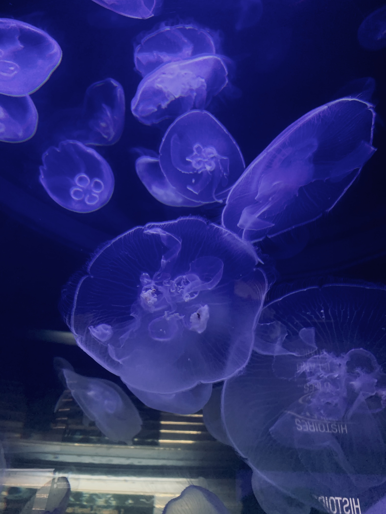
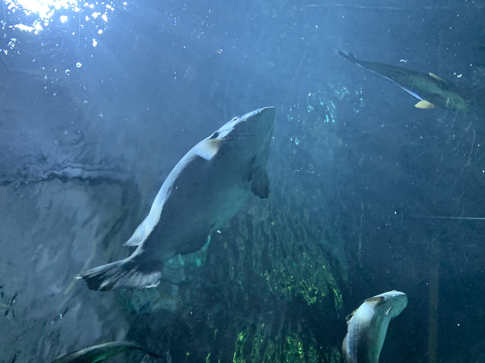
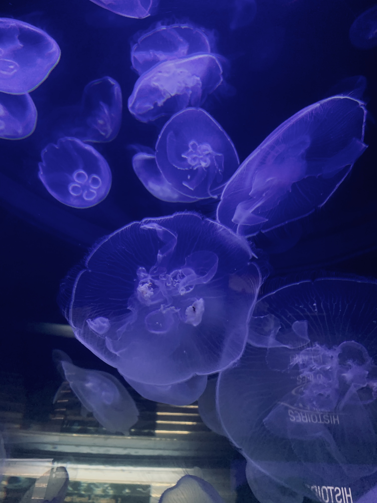
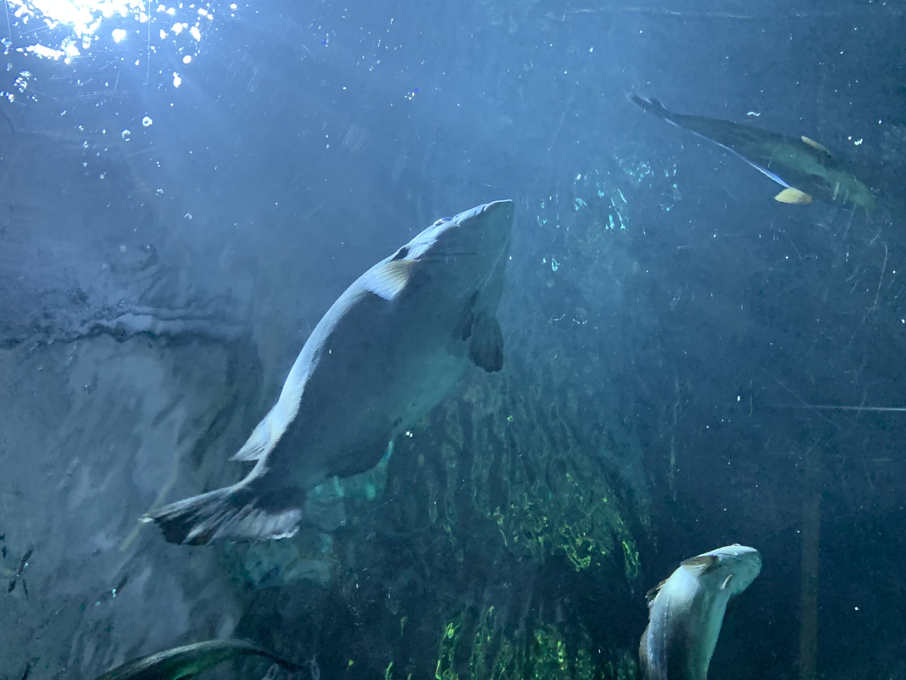

Projet photo réalisé en mai 2022, sur le thème animaux choisit par notre professeur. J'ai choisi de réalisé deux projets sur ce thème, les deux sont féerique, chacun à leur manière. Cette série de photo traite l'aspect féerique avec son côté coloré.
 


